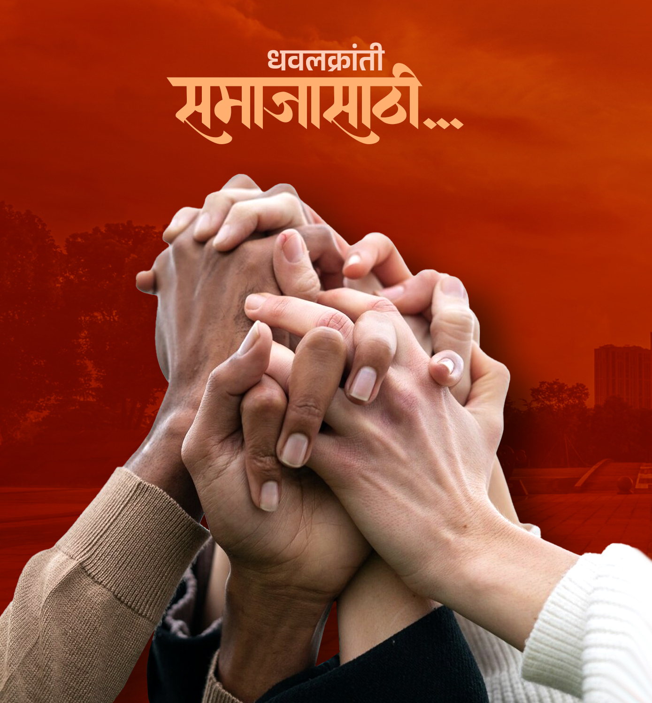
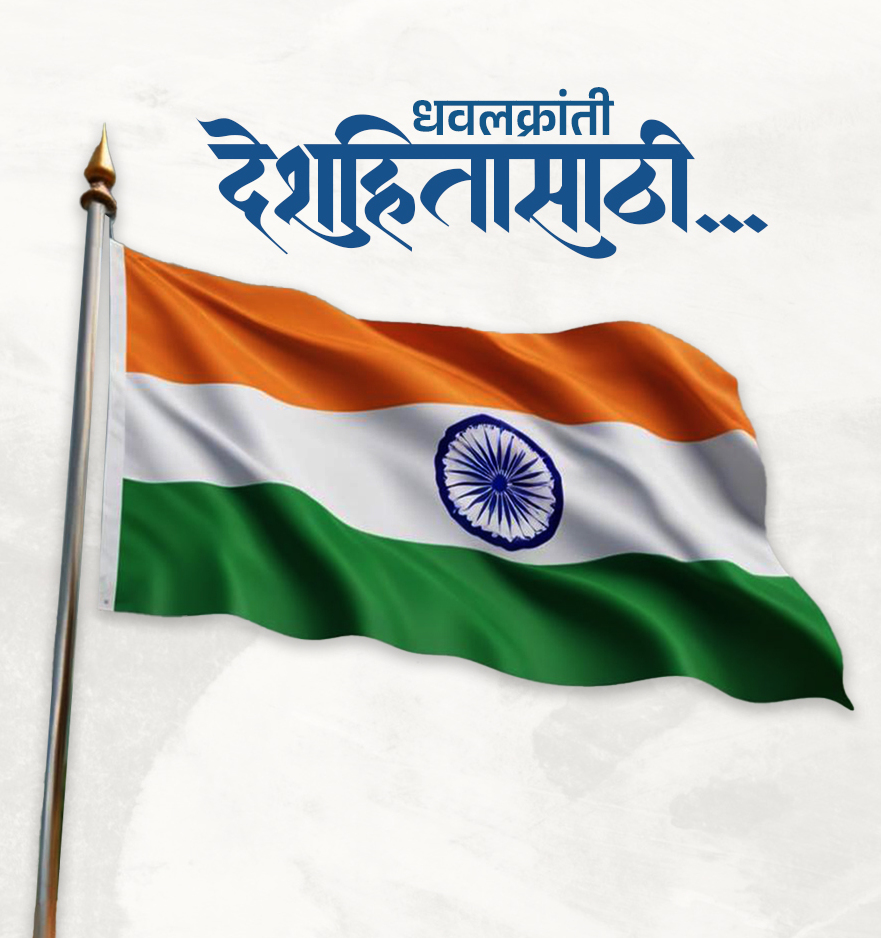
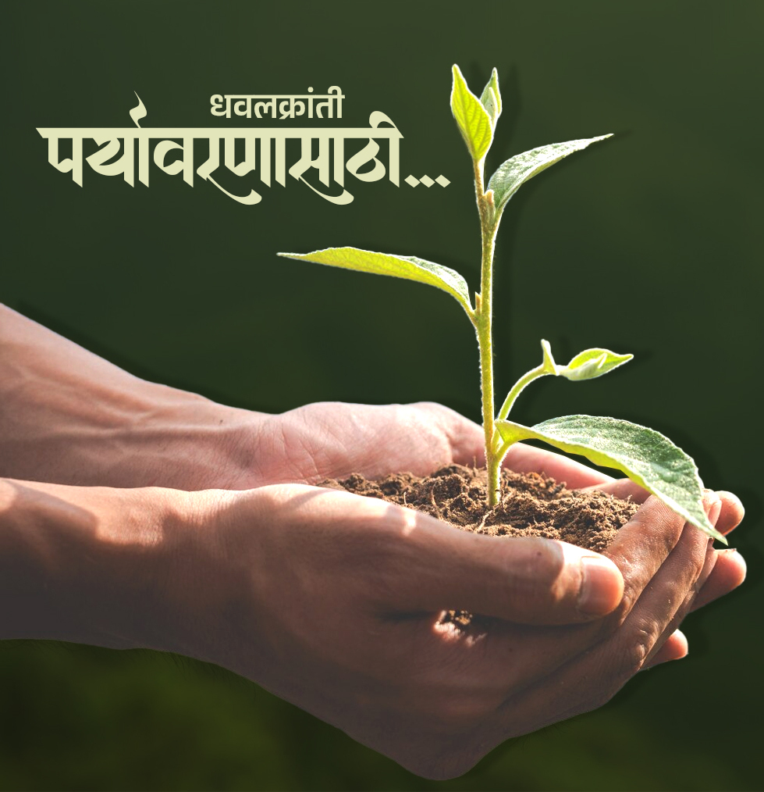

शेतीला जोड उद्योग आणि त्यातील फायदा लक्षात घेता नवीन पिढी व
शेतकरी बांधव यांना दुग्ध व्यवसाय व दुग्धोत्पादन प्रशिक्षण
कार्यक्रम राबविण्यात आले.
मुक्या जनावरांसाठी उपाय योजना
पशुखाद्यांची नैसर्गिक प्रक्रियेतून निर्मिती करून मुक्या
जनावरांच्या कल्याणासाठी व शेतकऱ्यांच्या हितासाठी शासनाच्या व
संस्थेच्या विविध योजनांची अंमलबजावणी करून त्या जागोजागी
कार्य करण्यात आली.
सक्षम महिला
महिला मुलींना संरक्षणाची प्रशिक्षण कार्यक्रम मोठ्या प्रमाणात
राबविण्यात आले
बाल विकास व बाल संरक्षण जनजागृती
युनिसेफ च्या धवलक्रांती संयुक्त विद्यामंदन बाल संरक्षणावर
आधारित लोकनाट्य व पथनाट्य प्रशिक्षण कार्यशाळा राबवण्यात आले
आणि जनजागृती करण्यात आली.
कुलर वाटप
जिल्हा ग्रामीण विकास यंत्रणा प्रकल्प संचालक माध्यमातून
ग्रामीण भागांमध्ये कुलर वाटप करण्यात आले.
w.d.t , p.i.a आणि w.c यांच्या भूमिका आणि जबाबदारी
प्रशिक्षण कार्यक्रम
नवीन पिढीला शैक्षणिक मार्गदर्शन व शैक्षणिक मदत
धर्मवाद व जातीय सलोखा साठी काही पावले
समाजामध्ये शांती आणि एकी कायम राहावी यासाठी दैनिक सकाळ पोलीस
आयुक्त कार्यालय व जवळ क्रांती यांच्या संयुक्त विद्यमानाने
जातीय सलोखा ही काळाची गरज या क्रमांकाच्या आयोजन करण्यात आले
रोजगार निर्मिती आणि विविध प्रशिक्षण
युवकांना काम भेटावे आणि त्यांच्या परिवाराच्या विकासासाठी
मसाला उद्योग प्रशिक्षण, विविध मार्गातून रोजगारांची निर्मिती
करण्याचा प्रयत्न व दुष्काळामुळे होणारे नुकसान थांबवण्यासाठी
दुष्काळ निवारण कार्यक्रम घेण्यात आले.
मागासवर्गीय युवक - युवतींना विविध प्रशिक्षण
युवक - युवतींच्या विकासासाठी आणि त्यांनी सक्षम व आत्मनिर्भर
बनावे.यासाठी त्यांना विविध प्रशिक्षण देण्यात आले. जसे की
इंटरियर डिझाईन व डेकोरेशन प्रशिक्षण, विमा सल्लागार, बेकरी
उत्पादन ,म्युरल पेंटिंग आणि इतर
मैदानी खेळांविषयी जागरूकता
ग्रामीण व शहरी भागातील विद्यार्थ्यांची खेळाची आवड निर्माण
करून. खेळांचे महत्त्व पटवून जास्तीत जास्त प्रमाणात खेळाडू
तयार करण्याच्या दृष्टिकोनातून क्रीडा संकुलन उभारण्यात आले.
कौशल्य प्रशिक्षण
तरुणांनी पुढे येऊन सक्षम व विकसित व्हावे यासाठी स्वयंरोजगार
कौशल्य प्रशिक्षणाचे विविध कार्यक्रम धवलक्रांतीच्या
माध्यमातून राबविण्यात आले.
धवलक्रांती च्या कामाबद्दल जिल्हा अधिकारी यांनी
प्रशिस्तीपत्र दिले .
पर्यावरण संवर्धन आणि भविष्य हितासाठी कार्यक्षम
घातक कचऱ्याची विल्हेवाट
पर्यावरणाला हानीकारक व प्रदूषण निर्मिती करणारा घातक कचरा
निवारण यासाठी विशेष पावली उचलण्यात आली. विविध औद्योगिक
वसाहती व इतर भागातील घातक कचरा संकलन करून. त्याची योग्य ती
विल्हेवाट करण्यात आली.
कालबाह्य खाण्याचा पुनःवापर
कचरा निवारण व प्रदूषण निवारण अंतर्गत मोठ्या प्रमाणात निर्माण
होणारे कालबाह्य अन्न हे पुन्हा वापर करून त्याचा नैसर्गिक खत
निर्मितीसाठी उपयोग करता येऊ शकतो .हे लक्षात घेता.कालबाह्य
खाण्याचे संकलन करून नैसर्गिक खतांची निर्मिती करण्यात आली.
शेतीचा पोच सुधारणा भूमी अंकलन
शेत जमिनीचा पोत हा नेहमी चांगला असावा त्यामुळे पिकाची वाढ
चांगली होते आणि उत्पादनामध्ये वाढ होते हे लक्षात घेत. विविध
उपक्रम राबवून त्या अनुषंगाने काम करण्यात आली.
पर्यावरण जागृतीसाठी सहल
पाण्याचे महत्व आणि पर्यावरण जागृती गरज लक्षात घेता पाणलोट
अभ्यासक्रम सहलीचे आयोजन करण्यात आले.
जलसंधारण प्रशिक्षण
पाण्याची महत्त्व व पाण्याचासाठा याचा विचार करत. प्रकल्प
प्रशिक्षण संस्था अंतर्गत (पी.टी.ओ) एकात्मिक पाणलोट
व्यवस्थापन कार्यक्रमांतर्गत प्रकल्पस्तरावरील प्रशिक्षण
देण्यात आले.
पाणलोट व्यवस्थापन कार्यक्रम
या कार्यक्रमांतर्गत जिल्हा पाणलोट विकास यंत्रणा प्रकल्प,
कार्यान्वयन यंत्रणा, बचत गट बांधणी बाबत माहिती बचत गट
कार्यपद्धती याबद्दल माहिती आणि मूल्यमापन करण्यात आले.

समाज हितासाठी आणि समाज विकासासाठी अग्रेसर
शेती जोड उद्योग दूध निर्मिती
शेतीला जोड उद्योग आणि त्यातील फायदा लक्षात घेता नवीन पिढी व शेतकरी
बांधव यांना दुग्ध व्यवसाय व दुग्धोत्पादन प्रशिक्षण कार्यक्रम
राबविण्यात आले.
मुक्या जनावरांसाठी उपाय योजना
पशुखाद्यांची नैसर्गिक प्रक्रियेतून निर्मिती करून मुक्या जनावरांच्या
कल्याणासाठी व शेतकऱ्यांच्या हितासाठी शासनाच्या व संस्थेच्या विविध
योजनांची अंमलबजावणी करून त्या जागोजागी कार्य करण्यात आली.
सक्षम महिला
महिला मुलींना संरक्षणाची प्रशिक्षण कार्यक्रम मोठ्या प्रमाणात
राबविण्यात आले
बाल विकास व बाल संरक्षण जनजागृती
युनिसेफ च्या धवलक्रांती संयुक्त विद्यामंदन बाल संरक्षणावर आधारित
लोकनाट्य व पथनाट्य प्रशिक्षण कार्यशाळा राबवण्यात आले आणि जनजागृती
करण्यात आली.
कुलर वाटप
जिल्हा ग्रामीण विकास यंत्रणा प्रकल्प संचालक माध्यमातून ग्रामीण
भागांमध्ये कुलर वाटप करण्यात आले.
w.d.t, p.i.a, w.c यांच्या भूमिका आणि जबाबदारी प्रशिक्षण

नवीन पिढीला शैक्षणिक मार्गदर्शन व शैक्षणिक मदत
धर्मवाद व जातीय सलोखा साठी काही पावले
समाजामध्ये शांती आणि एकी कायम राहावी यासाठी दैनिक सकाळ पोलीस आयुक्त
कार्यालय व जवळ क्रांती यांच्या संयुक्त विद्यमानाने जातीय सलोखा ही
काळाची गरज या क्रमांकाच्या आयोजन करण्यात आले
रोजगार निर्मिती आणि विविध प्रशिक्षण
युवकांना काम भेटावे आणि त्यांच्या परिवाराच्या विकासासाठी मसाला
उद्योग प्रशिक्षण, विविध मार्गातून रोजगारांची निर्मिती करण्याचा
प्रयत्न व दुष्काळामुळे होणारे नुकसान थांबवण्यासाठी दुष्काळ निवारण
कार्यक्रम घेण्यात आले.
मागासवर्गीय युवक - युवतींना विविध प्रशिक्षण
युवक - युवतींच्या विकासासाठी आणि त्यांनी सक्षम व आत्मनिर्भर
बनावे.यासाठी त्यांना विविध प्रशिक्षण देण्यात आले. जसे की इंटरियर
डिझाईन व डेकोरेशन प्रशिक्षण, विमा सल्लागार, बेकरी उत्पादन ,म्युरल
पेंटिंग आणि इतर
मैदानी खेळांविषयी जागरूकता
ग्रामीण व शहरी भागातील विद्यार्थ्यांची खेळाची आवड निर्माण करून.
खेळांचे महत्त्व पटवून जास्तीत जास्त प्रमाणात खेळाडू तयार करण्याच्या
दृष्टिकोनातून क्रीडा संकुलन उभारण्यात आले.
कौशल्य प्रशिक्षण
तरुणांनी पुढे येऊन सक्षम व विकसित व्हावे यासाठी स्वयंरोजगार कौशल्य
प्रशिक्षणाचे विविध कार्यक्रम धवलक्रांतीच्या माध्यमातून राबविण्यात
आले.
धवलक्रांती च्या कामाबद्दल जिल्हा अधिकारी यांनी प्रशिस्तीपत्र दिले
.

पर्यावरण संवर्धन आणि भविष्य हितासाठी कार्यक्षम
घातक कचऱ्याची विल्हेवाट
पर्यावरणाला हानीकारक व प्रदूषण निर्मिती करणारा घातक कचरा निवारण
यासाठी विशेष पावली उचलण्यात आली. विविध औद्योगिक वसाहती व इतर भागातील
घातक कचरा संकलन करून. त्याची योग्य ती विल्हेवाट करण्यात आली.
कालबाह्य खाण्याचा पुनःवापर
कचरा निवारण व प्रदूषण निवारण अंतर्गत मोठ्या प्रमाणात निर्माण होणारे
कालबाह्य अन्न हे पुन्हा वापर करून त्याचा नैसर्गिक खत निर्मितीसाठी
उपयोग करता येऊ शकतो .हे लक्षात घेता.कालबाह्य खाण्याचे संकलन करून
नैसर्गिक खतांची निर्मिती करण्यात आली.
शेतीचा पोत सुधारणा भूमी अंकलन
शेत जमिनीचा पोत हा नेहमी चांगला असावा त्यामुळे पिकाची वाढ चांगली
होते आणि उत्पादनामध्ये वाढ होते हे लक्षात घेत. विविध उपक्रम राबवून
त्या अनुषंगाने काम करण्यात आली.
पर्यावरण जागृतीसाठी सहल
पाण्याचे महत्व आणि पर्यावरण जागृती गरज लक्षात घेता पाणलोट अभ्यासक्रम
सहलीचे आयोजन करण्यात आले.
जलसंधारण प्रशिक्षण
पाण्याची महत्त्व व पाण्याचासाठा याचा विचार करत. प्रकल्प प्रशिक्षण
संस्था अंतर्गत (पी.टी.ओ) एकात्मिक पाणलोट व्यवस्थापन कार्यक्रमांतर्गत
प्रकल्पस्तरावरील प्रशिक्षण देण्यात आले.
पाणलोट व्यवस्थापन कार्यक्रम
या कार्यक्रमांतर्गत जिल्हा पाणलोट विकास यंत्रणा प्रकल्प, कार्यान्वयन
यंत्रणा, बचत गट बांधणी बाबत माहिती बचत गट कार्यपद्धती याबद्दल माहिती
आणि मूल्यमापन करण्यात आले.